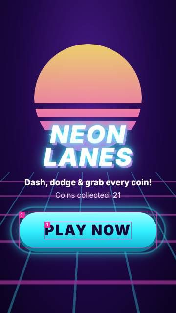

| time | saw | phase | planner | actions (with human reaction time) | notes | cost |
|---|
0:02.0
turn 1 | |
tutorial
decider: tutorial 97%
clarity 98% |
sees: Car runner tutorial: Swipe to switch lanes!
progress: First turn, starting tutorial. |
0:03.6 swipe Swipe right to switch to the right lane as instructed (+1643 ms) |
Synthwave 3-lane car runner. Swipe left/right to switch lanes, avoid pink obstacles, collect coins. | 2.8s
$0.0050 |
0:04.9
turn 2 |  |
gameplay
decider: gameplay 71%
clarity 78%
last input worked: 96% |
sees: Car in right lane, 'NICE DODGE!' text, orange barrier far ahead
progress: Swipe right dodged the obstacle and collected a coin |
0:04.9 wait Drive forward and see what is coming up |
Synthwave 3-lane car runner. Swipe left/right to switch lanes, avoid pink obstacles, collect coins. Currently in right lane. | 2.3s
$0.0049 |
0:06.5
turn 3 |  |
gameplay
decider: gameplay 99%
clarity 60%
last input worked: 93% |
sees: Car driving in right lane, yellow/orange object ahead in middle lane
progress: Swiped right and drove forward to 89m, 10 coins |
0:06.5 wait Drive closer to see what is ahead in the lanes |
Synthwave 3-lane car runner. Swipe left/right to switch lanes, avoid obstacles, collect coins. Currently in right lane. | 2.3s
$0.0050 |
0:07.5
turn 4 |  |
tutorial
decider: tutorial 93%
clarity 96%
last input worked: 94% |
sees: Tutorial prompt: Swipe UP to jump! with orange barriers across all lanes
progress: Reached 104m and triggered the jump tutorial |
0:07.8 swipe Swipe up to jump over the barrier (+321 ms) |
Synthwave 3-lane car runner. Swipe left/right to switch lanes, swipe up to jump over low barriers. Currently in right lane. | 2.0s
$0.0045 |
0:09.3
turn 5 |  |
gameplay
decider: gameplay 70%
clarity 51%
last input worked: 88% |
sees: Car in right lane approaching tall pink X block; coins in middle lane
progress: Jumped over previous barrier, now at 129m |
0:09.8 swipe Switch to middle lane to dodge tall pink block and collect coins (+581 ms) |
Synthwave 3-lane car runner. Swipe left/right to switch lanes, swipe up to jump over low barriers. Tall pink X blocks must be dodged by switching lanes. Currently in right lane. | 2.8s
$0.0052 |
0:11.1
turn 6 |  |
fail
decider: fail 94%
clarity 78%
last input worked: 9% |
sees: CRASHED! Keep your run going? popup with Revive (1 free) and No thanks buttons
progress: Crashed into the tall pink X block before the swipe registered |
0:12.3 tap “Revive and continue” Tap Revive and continue (1 free) to keep playing (+1212 ms) |
Synthwave 3-lane car runner. Swipe left/right to switch lanes, swipe up to jump over low barriers. Tall pink X blocks must be dodged by switching lanes. Crashed at 141m, using free revive. | 2.5s
$0.0053 |
0:13.6
turn 7 |  |
gameplay
decider: gameplay 90%
clarity 70%
last input worked: 97% |
sees: 3-lane synthwave road, 156m, coins ahead in right lane
progress: Revived and driving again at 156m |
0:13.6 wait Stay in right lane to collect coins and see upcoming obstacles |
Synthwave 3-lane car runner. Swipe left/right to switch lanes, swipe up to jump over low barriers. Tall pink X blocks must be dodged by switching lanes. Revived at 141m, currently in right lane. | 2.7s
$0.0057 |
0:16.0
turn 8 |  |
gameplay
decider: gameplay 96%
clarity 55%
last input worked: 89% |
sees: 204m, right lane, collecting coins, pink X block in middle lane ahead and another in right lane further ahead
progress: Collected coins in right lane, reached 204m |
0:16.0 wait Pass the tall pink X block in the middle lane
0:16.7 swipe Switch to middle lane to dodge upcoming right-lane block (+365 ms) |
Synthwave 3-lane car runner. Swipe left/right to switch lanes, swipe up to jump over low barriers. Tall pink X blocks must be dodged by switching lanes. Currently in right lane, need to pass middle block then swipe left. | 4.4s
$0.0072 |
0:17.7
turn 9 |  |
gameplay
decider: gameplay 99%
clarity 53%
last input worked: 64% |
sees: 241m, car in middle lane, tall pink X block directly ahead, coins in right lane
progress: Switched to middle lane, now a tall block is right in front |
0:19.3 swipe Switch to right lane to dodge tall pink X block and collect coins (+1579 ms) |
Synthwave 3-lane car runner. Swipe left/right to switch lanes, swipe up to jump over low barriers. Tall pink X blocks must be dodged by switching lanes. Swiping right now to dodge middle block and grab coins. | 2.4s
$0.0052 |
0:20.2
turn 10 |  |
fail
decider: fail 96%
clarity 30%
last input worked: 2% |
sees: GAME OVER text fading in, SPD 0, no buttons yet
progress: Crashed into the middle tall pink X block before the swipe registered |
0:20.2 wait Wait for game over menu or end card buttons to appear |
Synthwave 3-lane car runner. Swipe left/right to switch lanes, swipe up to jump. Crashed at 246m, waiting for game over menu or end card. | 2.1s
$0.0048 |
0:22.2
turn 11 |  |
end_card
decider: end_card 30%
clarity 95%
last input worked: 96% |
sees: End card for NEON LANES with PLAY NOW button and Coins collected: 21
progress: End card appeared after crashing |
0:25.0 tap “Play now” Tap the main PLAY NOW button on the end card (+314 ms) |
Synthwave 3-lane car runner. Reached end card after crashing at 246m with 21 coins collected. | 3.5s
$0.0054 |